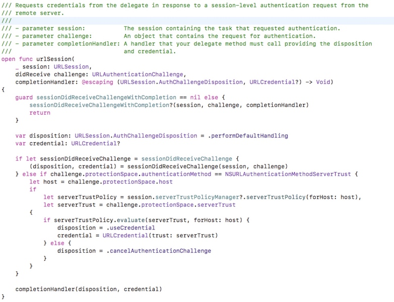
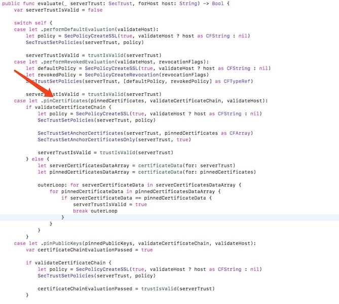

关于HTTPS的探究
最近公司从https的认证下来了,所以大家就都开始大张旗鼓的切换成https其实就是http后面加一个s,都说https安全,但是到底为什么安全,怎么做到了安全,我一直都模棱两可的,让我感觉很难受.所以还是想认真学习一下.
还是老规矩,先从表象入手(在iOS中的实现),在分析内部(https到底是什么)非iOSCoder直接跳过第一节
1 iOS中https的使用
非自签证书,也就是从CA机构颁发的(花了银子的)
手机系统或是浏览器中已经存储了CA机构的根证书,所以URLSession中已经对非自签证书做了处理,我们要做的就是在http后面+s it's work! 至于这个验证机制咱们放到后面说,一点点来~
自签名证书的验证.有两种方式,使用Alamofire开源网络框架和自己写,但是表现在代码上都不复杂,咱们通过Alamofire的源码来看一下具体的实现方式.(手写其实就是把它的实现粘贴出来,所以我们只讲一下Alamofire就行)

这是Alamofire关于https验证的具体实现.Alamofire是对URLSession的封装,所以它一定要实现URLSession的代理方法,这个代理就是URLSession做自签名证书验证的地方.注释中Requests credentials from the delegate in response to a session-level authentication request from the remote server.在代理中请求凭证,响应远程服务器的会话层验证,这英文虽然翻译不太明白,但大体的意思就是这里做验证.继续~sessionDidReceiveChallengeWithCompletion,sessionDidReceiveChallenge这两个闭包暂时不看,它的作用是如果你使用了Alamofire,你还想自定义验证,那你就实现这两个闭包中的一个.就不会走默认的验证方式.但实际当你看会了下面的默认验证方式也就知道怎么去自定义验证了.
从274行开始,if challenge.protectionSpace.authenticationMethod == NSURLAuthenticationMethodServerTrust,首先challenge的类型是URLAuthenticationChallenge,其中protectionSpace这个属性很重要,它是一个服务器受保护空间的一个具体的描述
我们要验证就需要这里面的信息.
open var realm: String? { get }
open var host: String { get }
open var port: Int { get }
open var proxyType: String? { get }
open var `protocol`: String? { get }
open var authenticationMethod: String { get }
open var serverTrust: SecTrust? { get }
其中authenticationMethod是一个字符串,用它来分辨什么方式来验证.不用枚举,我只能说apple也懒得改了方式有很多,我们主要用NSURLAuthenticationMethodClientCertificate,验证客户端.NSURLAuthenticationMethodServerTrust,验证服务器.所以Alamofire中先是判断是不是验证服务器.如果是的.那么let serverTrustPolicy = session.serverTrustPolicyManager?.serverTrustPolicy(forHost: host)
作者用runtime的方式动态的给URLSession增加了一下属性来管理ServerTrustPolicy(安全策略)objc_getAssociatedObject在各种开源库中都有使用.因为在开发时我们可能要对应不同的服务器,那不同的服务器肯定有不同的安全策略,所以manger的作用就是我们访问不同的host的时候 找到对应的策略进行验证.
ServerTrustPolicy这个枚举也是作者创建的,这里才是验证的核心,这个枚举的名字也很合理,验证服务器的策略.在这里作者充分利用了Swift的语言特性(这部分的实现在OC中有很大不同)-枚举关联对象
对应着5中种不同的验证方式
1. Default 默认的策略,合法证书通过验证
2. Revoked 对注销证书做的一种额外设置
3. pinCertificates 验证指定的证书(是否验证证书链)
4. pinPublicKeys 这个更上边的那个差不多
5. disableEvaluation 该选项下，验证一直都是通过的，也就是说无条件信任
6. customEvaluation 自定义验证，需要返回一个布尔类型的结果
ServerTrustPolicy和serverTrustPolicyManager介绍完了,serverTrustPolicyManager是可选的,需要我们在初始换Session的时候赋值.
在外层初始化sessionManager的时候对manager赋值.这样在URLSession回调的时候,就可以根据不通的host取出不用的验证策略.
呼~ 没想到这一行代码说了这么多.继续下一行
let serverTrust = challenge.protectionSpace.serverTrust
上面说过这个challenge,我们来看一下这个serverTrust
它实际类型是SecTrustRef,那这个类型到底是干嘛的呢?Apple关于SecTrust的文档,简单来说他就是对服务器传递给我们的证书和验证策略的一个封装.(Construct a trust object from a certificate and a policy.)我们需要的哪些服务器的信息,都得从这里获取.
最后终于到了最关键的一步了serverTrustPolicy.evaluate(serverTrust, forHost: host)这里才是真正做证书验证的地方serverTrustPolicy就是那个枚举类型.

我们主要就说.pinCertificates的类型,理解了一个,其他的就都理解了.此枚举关联了3个参数,一个证书集合,是否验证证书链,是否验证host.
let policy = SecPolicyCreateSSL(true, validateHost ? host as CFString : nil)
返回一个验证证书链策略的对象.
SecTrustSetPolicies(serverTrust, policy)
(Set the policies for which trust should be verified)
SecTrustSetAnchorCertificates(serverTrust, pinnedCertificates as CFArray)
(Sets the anchor certificates for a given trust.)
SecTrustSetAnchorCertificatesOnly(serverTrust, true)
(Reenables trusting anchor certificates in addition to those passed in via the SecTrustSetAnchorCertificates API.)
API 素质4连儿 这些都是做准备工作,不用的验证方式需要做不同的准备
这里是最终评估证书的地方.这样一个完整的单向验证就完成了.这里面一连调用了N个API,具体的实现其实我也不知道(我也查阅了文档,由于英文能力有限,所以我就不瞎说了,大家如果有兴趣可以自己查阅一下),但是如果我们理解Https的原理,那也就知道这些API内部在做什么了.(知道了Alamofire的实现,自定义实现相信大家也就会了)
2 HTTPS的原理
HTTPS的组成
HTTPS = HTTP + SSL
HTTP这个就不说了(不在本文讨论范围之内).
SSL是在传输层上为网络通信提供数据安全和数据完整性的一种安全协议.
那问题来了: 为什么协议?
其实它之所以叫协议就是因为它和我们现实世界中的协议是一样的.它就是对某些事的一种规定,一种规范.你想玩游戏,你女朋友不让你玩,后来你俩达成一个协议,你给她买一个包,她就让你玩一天.就酱.那你想要你的网络传输的安全的,你就按SSL的协议规则做,我说一你就一 我说二 你就二 就完了.
我们都知道HTTP协议是明文的,也就意味着你传输的数据,谁都可以看到,谁都可以修改,这很不安全.
于是大家就想用加密算法,把发送的数据加密,等接受到后再用秘钥解析数据,这样就安全了.但这样做有一个问题,就是这个秘钥怎么让对方知道.因为我们用的是对称加密.所以加密和解密用的都是同一个秘钥.现在有两种方案,第一种通过网络传输给对方,但是这样做,人家就又可以截获到你的网络请求,然后就知道你的秘钥了.第二种,你腿儿过去,奔走相告~,这老哥要是离你近点还可以接受,他要是在大洋彼岸这事可就费劲了.所以这个方案不行了.
下一个方案,RSA非对称加密.这里需要展开一下
RSA加密算法
这里面涉及到了很多数学和密码学的知识,其实很多我也一知半解的,我只能简单说一下.具体点的看这里阮一峰的博客.我觉得说的还可以
首先我们我们要知道一个概念叫质数~这个东西很神器,它有很多应用,其中一个就是密码学.
质数定义为在大于1的自然数中，除了1和它本身以外不再有其他因数。
互质关系:
如果两个正整数，除了1以外，没有其他公因子，我们就称这两个数是互质关系.
比如 7和9就是互质关系.
加密算法就是利用的这一点,我们随便说两个质数,很容易,但是我给出乘积比如30603111(之前这写错了,丢人了),让你找出它是哪两个质数的乘积,这事可就不简单了.实际它是51*61,那么大家可能想让计算机暴力破解会不会成为可能.人类已知破解的RSA秘钥的最大长度是768位,看起来很厉害,但实际上,我们的秘钥长度最少也是1024位的.
这是我在mac钥匙串上随便截的一个证书,他的秘钥长度是2048位,所以想破解这个秘钥,在咱们现有计算机的体系下,是不可能的.但是如果哪天量子计算机量产了,那迄今为止所有的加密方案都将作废.所以安全这种事是没有绝对的,所谓的绝对安全也只是在一个标准化的体系下.
非对称加密
好了我们知道了RSA加密算法,我们在来看看非对称加密,所谓非对称加密就是加密的秘钥和解密的秘钥是两个完全不同的秘钥,成为公钥私钥,私钥加密的数据,用公钥才可以解开,用公钥加密的数据,用私钥才可以解开.这样咱们刚才的问题就解决了.我自己保存私钥,把公钥张贴出去,全世界谁都可以看到.你们想和我说悄悄话,那就把想说的话用公钥加密好,发过来,劫持的人没有私钥,他拿到的数据也没有任何意义.这样做看起来是完美了,但其实不是这样的.原因就是非对称方案的加密解密很慢的.这样的开销在追求更快更高更强的今天,显然是不行的.
所以又有人想出的新的方案.
非对称加密传输对称秘钥
也就是说A和B之间传输数据,A先用公钥把一个对称秘钥DC-Key加密,然后传给B,B拿到后用私钥解析出DC-Key,然后他们用这个DC-Key加密数据,这样只有第一次的时候慢以后的效率是很快的.
这样问题终于解决了吧~但实际并没有,因为实际操作时大部分情况,Client的公钥都是从Server请求来的,这就存在一种可能,就是第一次请求公钥的时候被中间人截获了.
这样,这个中间人可以做任何事情.这显然是又不安全了
但是我们可以分析问题,问题主要出在了公钥的合法性上,谁能证明你的公钥就是我想访问那个server的公钥呢?
大家可以想一下自己的毕业证书,通过这个,就可以鉴定你是不是XXX大学的毕业生.但是这需要一个权威机构,就是一个有公信力的,大家都相信的机构.如果你去某公司应聘,用人单位怀疑你的学历,他可以要求你提供毕业证书,他去有公信力的机构调查一下.判断你的学历.那我们也可以效仿.生成数字签名
数字签名
首先要有一家有公信力的机构,也就是我们常说的CA机构.他自己一对公钥私钥.当有人来申请,说我想要安全的网络传输的证书.那么CA机构会给(就比如"我的"公司吧)生成一套公钥私钥,这个是属于我的公司.同时呢还要给我的公司一个证书,这个证书中我把它分成三部分组成,这样好理解一点:我的公司的公钥,和一些重要信息(其中有版本号,序列号,有效日期,使用者,颁发者标识,等等一堆东西),还有最重要的一个就是数字签名,这个数字签名是将我的公司的公钥和重要信息先用Hash算法生成一个摘要(用hash算法是为了保证只要数据被篡改了一点点,那么生成的摘要的变化就翻天覆地,防止中间人猜测出规则来),然后用CA机构的私钥!注意是CA机构的私钥对这个摘要进行加密,形成了数字签名.(Https的证书都是遵循X.509标准的,该标准规定了证书的数据结构)
这就是一个数字证书的结构.当从服务器拿到证书的时候,用同样的Hash算法解出摘要,然后用CA的公钥去解密,把得到的数据和证书里原来的信息就对比,就知道了是不是被篡改了.也就知道了这是我自己的服务器,而不是中间人的.因为中间人不知道CA的私钥,他也伪造不出来CA公钥能解析的证书.如果他想劫持到客户端用服务器的公钥加密的对称秘钥,但是他没有私钥,拿到加密后的数据,也没有意义.所以现在来看这种策略是安全的了.可能有童鞋会问.那CA的公钥又是咋来的?难道要再来一个证书?无限循环?事实上现在的操作系统和浏览器中已经内置了一些顶层的根证书,顶层的根证书!顶层的根证书!点击mac的钥匙串可以查看.也就是说只有这些机构颁发的证书才是可信的,有公信力的.(这些机构挣钱简直不要太简单...)事实上.我们的Https证书一般都是二级代理的.也就是说顶层的机构干活忙不过来了,就产生了二级机构,他们也可以颁发证书.所以有一种验证方式是证书链验证,上面iOS的API中就做了证书链验证,它会把整条链都验证一遍,才算是安全,至于如何找到上一级的证书,X.509的证书标准的数据结构中固定的数据,表明证书的颁发机构等信息,足矣找到上级证书.
关于token(更好的理解数字签名)
简单说一下token,token其实也是一种数字签名,这也就是为什么token能认证用户的原因,大家可以看一下自己服务器返回的token,其实它是一个三段式,XXX.XXXXXX.XXXXXXXXX,第一段,是一段json,然后用base64加密,json中说明了token的加密方式和一些信息,第二段也是一段json,也是用base64加密,这一段的json中是用户的唯一标示信息和一些非关键数据.第三段是用第一段中表明的加密算法(一般是SHA256)和秘钥把把第一段和第二段的数据加密,形成这样的三段式.这样做后,服务器拿到token,把第三段的数据解密,和前两段对比,如果一致,说明数据没有被篡改.如果劫持者修改了任何一段数据都会导致解密失败,或对比不一致,验证也就失败了.所以大家可以发现,数字签名的原理都是一样的,只不过用在不用的地方,标准不同而已.它最主要的作用就是防篡改.
原归正传
这样整个过程就安全了.(实际请求的时候对称秘钥是握手阶段中三个随机数共同决定的,至于为什么三个随机数共同决定的)
"不管是客户端还是服务器，都需要随机数，这样生成的密钥才不会每次都一样。由于SSL协议中证书是静态的，因此十分有必要引入一种随机因素来保证协商出来的密钥的随机性。
对于RSA密钥交换算法来说，pre-master-key本身就是一个随机数，再加上hello消息中的随机，三个随机数通过一个密钥导出器最终导出一个对称密钥。
pre master的存在在于SSL协议不信任每个主机都能产生完全随机的随机数，如果随机数不随机，那么pre master secret就有可能被猜出来，那么仅适用pre master secret作为密钥就不合适了，因此必须引入新的随机因素，那么客户端和服务器加上pre master secret三个随机数一同生成的密钥就不容易被猜出了，一个伪随机可能完全不随机，可是是三个伪随机就十分接近随机了，每增加一个自由度，随机性增加的可不是一。"
那如果是双向认证,Client的端也需要配置一个证书.但一般情况下我们不需要做双向认证.
这样这个HTTPS的原理,我们就梳理清楚了.
下面是我参考的一些资料
https://developer.apple.com/documentation/security/certificate_key_and_trust_services
http://swiftcafe.io/2016/04/16/swift-https
https://mp.weixin.qq.com/s/StqqafHePlBkWAPQZg3NrA
http://www.ruanyifeng.com/blog/2014/02/ssl_tls.html
https://blog.csdn.net/it_man/article/details/24698093